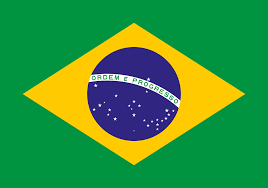

BRAZIL
00 :
00 :
00
Country Details
1. Brazil has four time zones, ranging from UTC-5 to UTC-2.
2. The main time zone used in most of the country, including Brasília, is Brasília Time (BRT), which is UTC-3.
3. India, Brasilia - Federal District, is 8 hours and 30 minutes ahead of Brazil.
4. The far western state of Acre uses the UTC-5 time zone, which is two hours behind Brasília.
5. When it is 12:00 PM in Brasília, it is 1:00 PM in Fernando de Noronha (UTC-2) and 10:00 AM in Acre.